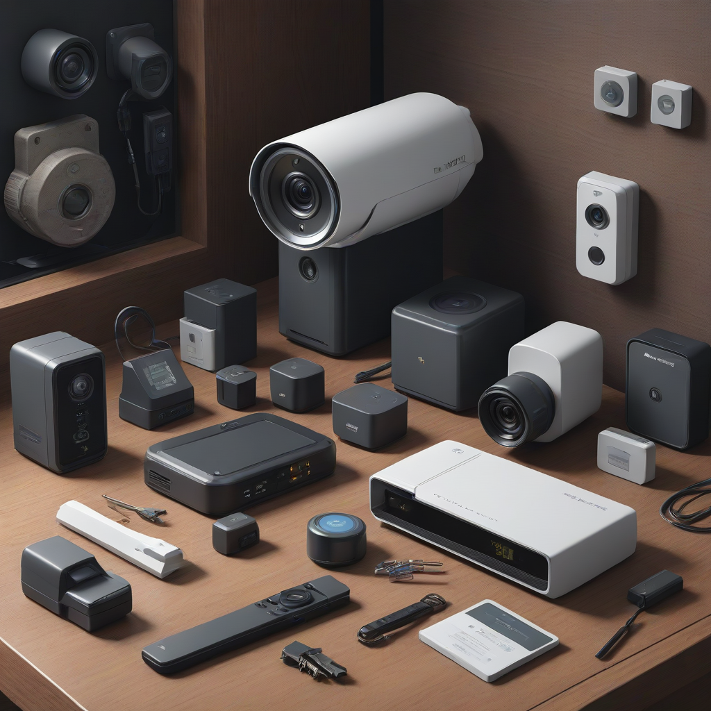

Quick Answer: For most homeowners seeking the best diy home security systems 2026, SimpliSafe offers the ideal balance of affordable hardware and professional monitoring without long-term contracts. For renters or those prioritizing video, Ring Alarm Pro provides exceptional Alexa integration, while Abode is the top choice for tech-savvy users wanting advanced automation.
In an era where safety is paramount, the landscape of home protection has shifted dramatically. Gone are the days when securing your property required a three-year contract and a technician drilling holes in your drywall. Today's wireless home security systems empower you to take control of your safety without the hassle of professional installation. This shift is not just about convenience; it is about accessibility. With the right equipment, every homeowner and renter can fortify their living space against unauthorized entry, fire hazards, and environmental threats.
However, navigating the crowded market of diy alarm system reviews can be overwhelming. Manufacturers constantly update features, pricing models, and connectivity protocols. Choosing the wrong system can leave you with a false sense of security or a bill you didn't anticipate. As a security expert, my goal is to cut through the marketing noise. We will examine the top-rated options available for 2026, focusing on reliability, ease of use, and genuine value. Whether you are looking for cheap home security cameras or a comprehensive smart home ecosystem, this guide will help you make an informed decision.
Why Choose DIY Home Security in 2026?

The transition from professionally installed alarm systems to DIY solutions represents a major technological leap. In 2026, the average homeowner is tech-literate enough to install a system in under an hour, often without tools. This democratization of security is driven by three core factors: cost efficiency, flexibility, and technological advancement.
First, the cost structure of DIY systems is significantly more favorable. Traditional systems often hide costs in long-term monitoring contracts that can extend for 36 to 60 months. In contrast, home security no contract options allow you to pay for the hardware upfront and choose monitoring plans that fit your budget. You are not locked in. If you move, you simply pack up your base station and sensors. This mobility is particularly beneficial for best home security for renters, who often face restrictions on drilling into walls or cannot transfer legacy contracts to a new property.
Secondly, the technology has matured. Modern wireless protocols like Z-Wave and Zigbee are stable, secure, and battery-efficient. In 2026, we see standard integration with 5G cellular backup, ensuring your system works even if your internet is cut. Furthermore, AI-driven video analytics have reduced false alarms significantly. Motion sensors now distinguish between a pet, a human, and a passing car, ensuring you only get alerted when it truly matters. This reliability makes self-installation a viable option for primary home defense, not just a backup.
Cost Savings: Eliminate installation fees and high-pressure sales tactics.
Portability: Take your system with you if you move home
s.
Customization: Start small with a starter kit and expand as needed.
Smart Home Integration: Easy connection to lights, locks, and thermostats.
Top DIY Home Security Systems Comparison (2026)
Before diving into individual reviews, it is crucial to see how the market leaders stack up against one another. The following comparison table highlights the core specifications, pricing models, and unique selling points of the top contenders. These ratings are based on hardware durability, app usability, and monitoring reliability.
System
Starting Price (Starter Kit)
Monitoring Cost (Monthly)
Contract Required
Best For
SimpliSafe
$249
$10 - $30
No
Overall Value & Reliability
Ring Alarm Pro
$249
$10 - $20
No
Alexa Users & Video
Abode
$279
$10 - $25
No
Smart Home Automation
Arlo Secure
$199
$2.99 - $14.99
No
Wireless Cameras
Eufy Security
$229
$0 (Self-Monitor)
No
Privacy & No Monthly Fees
As you can see from the table, the entry price is relatively consistent across the board, ranging from $199 to $279 for a basic setup. However, the long-term costs vary based on whether you utilize cloud storage and professional monitoring. While Eufy offers a zero-monthly-fee option for local storage, systems like SimpliSafe and Ring offer superior cellular backup and emergency dispatch services for a monthly fee.
Detailed Reviews: The Best DIY Options
1. SimpliSafe: The Gold Standard for Reliability
SimpliSafe remains the market leader for a reason. Founded with a mission to make security affordable and accessible, their 2026 lineup focuses on simplicity and robustness. The system uses a proprietary wireless protocol that is highly resistant to interference. The base station includes a built-in cellular backup, which is critical. If a burglar cuts your internet line, the SimpliSafe alarm still communicates with the monitoring center via 5G cellular.
The hardware is sleek and minimalistic. Entry sensors use adhesive strips that are strong enough to hold the weight of the sensor but removable for renters. The motion sensors feature pet immunity up to 65 pounds, meaning your dog won't trigger the alarm while you are away. For video protection, the SimpliSafe Outdoor Camera offers 2K resolution and HDR, providing clear footage even in bright sunlight.
Pros:
Industry-leading cellular backup included in base station.
Excellent customer support with 24/7 live chat.
No long-term contracts required for monitoring.
Includes a free panic button for personal safety.
Cons:
Hardware can be slightly more expensive than generic DIY brands.
Video storage requires a paid subscription plan.
Does not integrate with Z-Wave devices.
2. Ring Alarm Pro: The Smart Home Powerhouse
Ring has evolved significantly since its acquisition by Amazon. The Ring Alarm Pro is unique because it includes a built-in eero Wi-Fi 6 router. This makes it the best home security for renters who also want to upgrade their internet connectivity. If you are already in the Amazon ecosystem, the integration is seamless. You can use Alexa to arm the system, show cameras on Echo Show devices, or receive flash briefings.
The system relies on Ring's robust monitoring service. One standout feature is the Ring Protect Pro plan, which includes 24/7 monitoring, cellular backup, and advanced video features. The cameras integrate tightly with the system, allowing you to see who is at the door on your phone instantly. The keypad is also a touchscreen, offering a more modern interface than traditional button-based keypads.
Pros:
Built-in Wi-Fi 6 router improves home internet speed.
Deep integration with Alexa and Amazon smart home devices.
High-quality video doorbell and camera options.
Easy expansion with Ring's ecosystem products.
Cons:
Requires a Ring Protect subscription for most video features.
Privacy concerns for some users regarding Amazon data handling.
Abode distinguishes itself by supporting open standards like Z-Wave, Zigbee, and Wi-Fi. This makes it the best choice for users who want to build a highly customized smart home. You can pair Abode with third-party smart locks, thermostats, and lights from brands like Philips Hue, August, and Ecobee. The Abode Iota hub is compact and connects everything together seamlessly.
The app is highly intuitive, offering scene automation. For example, you can set a "Goodnight" scene that arms the alarm, locks all smart locks, and turns off the lights. Abode also offers professional monitoring, but you can opt for self-monitoring entirely if you prefer. The hardware is generally cheaper than SimpliSafe, but the learning curve is slightly steeper due to the customization options available.
Pros:
Supports Z-Wave and Zigbee for extensive smart home control.
Flexible monitoring options (self or professional).
Highly customizable automation scenes.
Competitive hardware pricing.
Cons:
More complex setup for non-tech-savvy users.
Some third-party integrations require additional subscriptions.
Customer support can be slower than SimpliSafe.
4. Arlo Secure: The Video-First Approach
While Arlo started with cameras, their security system has matured into a full home defense solution. If your primary concern is visual verification, Arlo is a top contender. Their cheap home security cameras are actually premium quality, featuring 1080p to 4K resolution, color night vision, and two-way audio. The system is entirely wireless, meaning no wiring is needed for the sensors or cameras.
The Arlo Secure system uses a smart hub that acts as the brain. It supports local storage via a USB drive or cloud storage via subscription. The mobile app is excellent, allowing you to view all cameras and sensors in one dashboard. However, Arlo's proprietary ecosystem can be restrictive. You cannot easily mix Arlo sensors with other brands, which limits flexibility if you already have other smart devices.
Pros:
Superior video quality among DIY systems.
Fully wireless setup with no wiring required.
Battery life on cameras is industry-leading.
Advanced AI detection for people, vehicles, and pets.
Cons:
Monthly subscription is expensive for full video features.
Alarm response relies on cloud connectivity (cellular backup costs extra).
5. Eufy Security: Privacy and No Monthly Fees
Eufy (by Anker) has carved out a niche for users who prioritize privacy and hate monthly fees. The HomeBase unit stores all video footage locally on the internal storage or an SD card. This means your data never leaves your home, reducing the risk of cloud breaches. For those looking for wireless home security systems without the recurring cost burden, Eufy is unmatched.
The hardware is durable and water-resistant, making it suitable for outdoor use. The sensors are simple to install and pair quickly with the HomeBase. While Eufy does offer professional monitoring now, their core value proposition remains the self-monitoring capability. The app sends push notifications directly to your phone when motion is detected, allowing you to check the camera feed instantly.
Pros:
No monthly fees required for local video storage.
Enhanced privacy with local data processing.
Affordable hardware pricing.
Excellent battery life on wireless cameras.
Cons:
Professional monitoring is an afterthought compared to competitors.
Less robust smart home automation than Abode.
Cloud storage options are limited compared to Ring or Arlo.
Key Features to Look For in a DIY System
When shopping for diy home security systems 2026, it is easy to get distracted by flashy marketing. To ensure you are getting a system that actually protects your home, focus on these critical technical specifications. These features differentiate a toy from a real security system.
Cellular Backup: This is non-negotiable for serious security. If your internet goes down due to a power outage or a cyberattack, your system must still be able to call the police. Look for systems with built-in 4G or 5G LTE in the base station. If it is an add-on, ensure it is affordable.
Power Backup: The base station should have a built-in battery. If the power cuts out during a storm, the system should continue to monitor your entry points for at least a few hours. This ensures you are still protected when you are most vulnerable.
False Alarm Reduction: Check the motion sensors for pet immunity. If you have a large dog, ensure the sensor can distinguish it from a human intruder. Similarly, look for video cameras with AI person detection. You do not want to receive alerts every time a leaf blows across the lens or a car drives by the street.
Smart Home Compatibility: Consider how the system fits into your life. Can you use voice commands to arm it? Can it turn on lights when the alarm is triggered to scare off intruders? Systems like Abode excel here, while others like SimpliSafe are more closed-loop. Choose based on your existing smart devices.
Expansion Capabilities: Most people start with a starter kit covering the front door and living room. Can you easily add a garage door sensor or a leak detector later? Ensure the system allows for easy expansion without requiring you to buy a new hub.
DIY Installation Best Practices
One of the biggest advantages of these systems is the self-installation aspect. However, installation quality directly impacts the system's effectiveness. A poorly placed sensor might not trigger, or a camera might have a blind spot. Follow these expert tips to ensure your setup is secure from day one.
Test Before You Stick: Most adhesive sensors come with a peel-and-stick backing. Before you apply them permanently, hold them in place to test the range and sensitivity. Ensure the base station receives a strong signal from the furthest sensor.
Secure Entry Points First: Prioritize sensors for doors and windows that are accessible from the ground floor. These are the most common entry points for burglars. Do not forget to secure sliding glass doors, which can be vulnerable to prying.
Camera Placement: Place outdoor cameras above the reach of intruders, typically 8 to 10 feet high. Aim them to cover the driveway and front door, not just the street. Ensure they are not pointing directly into bright sunlight, which can cause blinding glare.
Wi-Fi Strength: If your home is large, your Wi-Fi signal might be weak in certain areas. Use a mesh Wi-Fi system or extenders to ensure your cameras and sensors stay connected. A disconnected camera is a useless camera.
Label Your Devices: In the app, rename your devices logically. Instead of "Camera 1," use "Front Door" or "Backyard Gate." This makes troubleshooting and viewing footage much faster during an emergency.
Additionally, consider the environment. If you live in a high-humidity area, ensure your outdoor cameras are rated IP65 or higher for water resistance. If you live in a cold climate, check the temperature rating of the battery-powered sensors to ensure they function in winter.
FAQ: Common Questions About DIY Security
Is DIY security as effective as professional installation?
Yes, for most residential needs, DIY security is just as effective. The sensors and communication protocols are identical to professionally installed systems. The main difference is that you place the equipment rather than a technician. As long as you follow placement guidelines and ensure your base station has cellular backup, the monitoring response time is the same. The technology does not care who installed it.
Do I need a contract for monitoring?
Most home security no contract systems in 2026 allow you to pay month-to-month. You are free to cancel at any time. However, some providers offer a discount if you commit to a 36-month term. Always read the fine print. Be aware that if you cancel monitoring, you may lose access to cellular backup and emergency dispatch, turning the system into a local alarm only.
Can I use DIY security in an apartment?
Absolutely. DIY systems are the best home security for renters because they are non-invasive. Most sensors use strong adhesive tape that leaves no residue when removed, satisfying most lease agreements. You can also use motion sensors and window alarms that do not require drilling. Just avoid hardwired systems, as these require electrical modifications that landlords typically forbid.
What happens if my Wi-Fi goes down?
This is why cellular backup is critical. If your home Wi-Fi fails, systems with a built-in cellular radio (like SimpliSafe or Ring Pro) will switch to the mobile network automatically. Your system will continue to monitor and alert the authorities. If your system relies solely on Wi-Fi, it will become offline and unable to send alerts until the internet is restored.
Are cheap security cameras reliable?
Not necessarily. While there are many cheap home security cameras on the market, price often correlates with build quality and app stability. Extremely low-cost cameras may have buffering issues, poor night vision, or insecure data encryption. Stick to reputable brands that offer regular firmware updates to patch security vulnerabilities. A $50 camera is not worth the risk if it fails during an incident.
Additionally, consider the cost of ownership. A cheap camera might require a paid subscription for cloud storage, negating the initial savings. Local storage options can be more economical in the long run.
Conclusion: Taking Action for Your Safety
Securing your home is one of the most important investments you can make. The best diy home security systems 2026 offer a level of protection that was once reserved for those willing to sign long-term contracts. Whether you choose the reliability of SimpliSafe, the smart home integration of Ring, or the privacy-focused approach of Eufy, the technology is ready for you.
Start by assessing your specific needs. Do you need video verification? Are you moving soon? Do you have pets? Answering these questions will narrow down the options significantly. Remember, the best system is the one you actually use and maintain. Regularly check your battery levels, update your firmware, and test your sensors to ensure they are working.
Do not let fear drive your decision, but let preparedness. A DIY system provides peace of mind, knowing that you have taken proactive steps to protect your family and property. Take the time to research, compare the features in our table, and choose the system that fits your budget and lifestyle. Your safety is worth the investment.
MC
Alarm Beep Guide
Editor de Tecnología en Mejor Conexión
Especialista en telecomunicaciones con más de 5 años analizando proveedores de internet en México.
Nuestro equipo compara precios reales, velocidades y cobertura para ayudarte a elegir la mejor conexión.
✓ Datos verificados 2026✓ Actualizado: 2026-05-29✓ Transparencia editorial